地政学
マルセイユは地中海、北アフリカ、西アジア、欧州内陸を結ぶフランスの海の窓口です。港湾、移民、軍事、エネルギー、外交が市民生活に近く、共和国の周縁ではなく南から国を開く入口として働く街です。海路を映します。
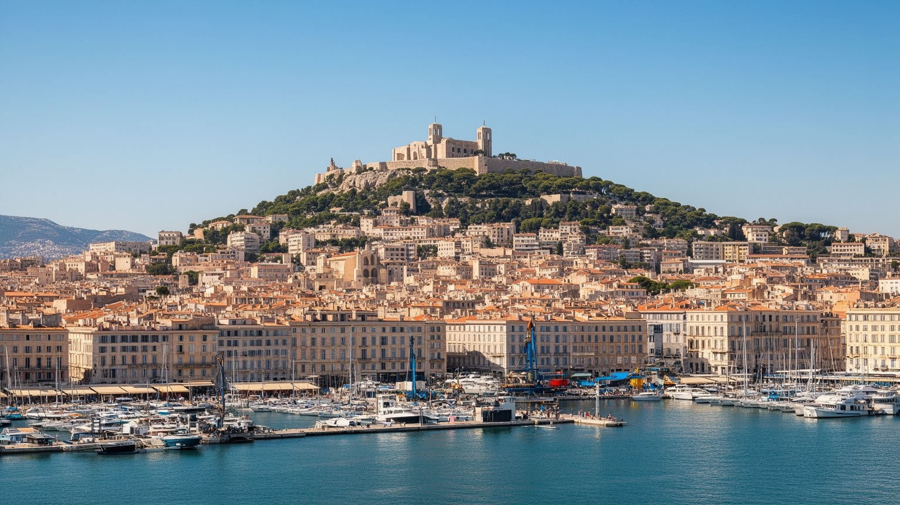
🇫🇷 フランス / プロヴァンス＝アルプ＝コート・ダジュール / World City Atlas
ギリシア以来の港、北アフリカと地中海の移民、石灰岩の丘、巨大な港湾物流、サッカー、宗教、住宅問題が、潮風とミストラルの中で交差する南フランスの都市。
都市の骨格
マルセイユは首都ではないが、海からフランスを読み替える都市です。旧港の観光景観、北部の団地、フォスの工業港、移民の市場、丘の聖堂が、共和国の境界と日常を近くに置きます。
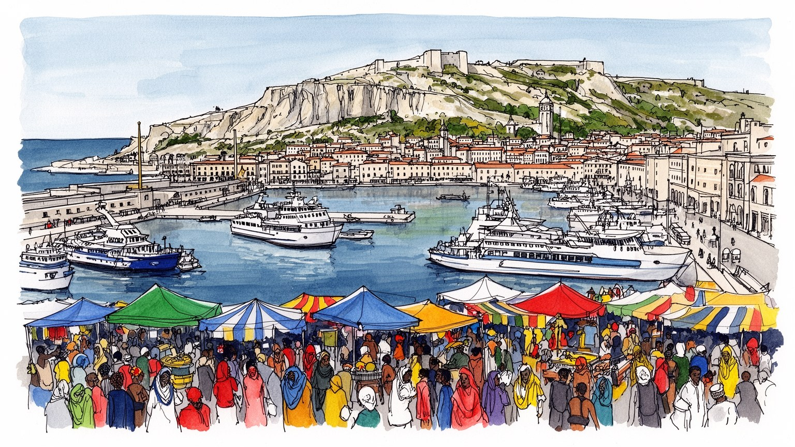
マルセイユは地中海、北アフリカ、西アジア、欧州内陸を結ぶフランスの海の窓口です。港湾、移民、軍事、エネルギー、外交が市民生活に近く、共和国の周縁ではなく南から国を開く入口として働く街です。海路を映します。
港湾物流、石油化学、フェリー、観光、医療、大学、デジタル通信、映画制作が雇用を作ります。コンテナ、倉庫、清掃、飲食、警備、介護、配送の仕事が観光写真の外側で都市を支えています。労働争議も歴史です。
カトリック、イスラム、ユダヤ教、アルメニア、コモロ、マグレブ、イタリア、プロヴァンスの記憶が重なります。市場、音楽、祈り、サッカーは対立も抱えつつ、港町らしい混交の公共性を作っています。街の声も豊かです。
旅行者は旧港、ノートルダム・ド・ラ・ガルド、カランクを巡りますが、住民には家賃、老朽住宅、交通、治安、失業、暑さが現実です。美しい海辺と社会問題が同じ坂道で接しています。生活の厚みを見る旅です。街へ。
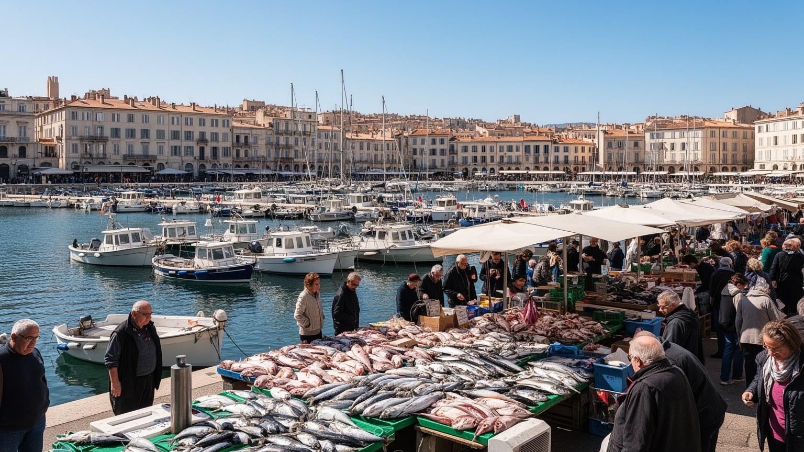
マルセイユの旧港は、観光客が最初に街を理解する舞台であると同時に、都市の長い時間を圧縮した場所です。紀元前にギリシア人が築いた港の記憶、魚市場、フェリー乗り場、カフェ、ホテル、劇場、地下鉄駅、丘へ向かうバスが、湾の縁に重なります。水面に並ぶ小型船や夕方の散歩は穏やかに見えますが、旧港は常に再編されてきました。大型物流は北へ移り、港湾機能の一部は観光と公共空間へ置き換わり、広場や歩道はイベントと警備の場所にもなりました。ここではマルセイユが古い港町であることが見える一方、住民の日常と観光消費の距離も現れます。魚を買う人、通勤で横切る人、クルーズから来る人、夜に飲む若者、物乞いをする人が同じ視界に入ります。旧港を読むには、絵葉書の水面だけでなく、港湾都市が働く場所から眺める場所へ変わった過程、観光化が家賃や商店を変える力、海を前にした公共空間が誰に開かれているかを見る必要があります。朝の魚市、観光船の呼び込み、警察の巡回、祭りの群衆は、港が単なる背景ではなく都市を動かす舞台であることを示します。さらに、ここは市政が街の顔をどう整え、どの記憶を前面に出すかを試す場所でもあります。潮の匂いも街の記憶を呼び戻します。日々の港です。海の入口は美しいだけでなく、都市の記憶を選び直す場所でもあります。
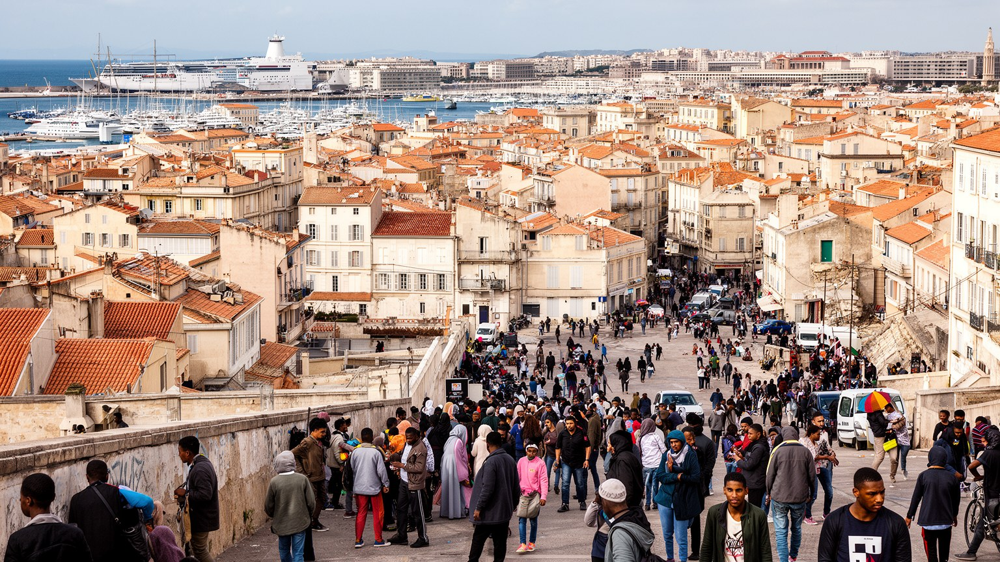
マルセイユは、フランスの都市の中でも移民の歴史が特に深く見える場所です。イタリア、アルメニア、コルシカ、マグレブ、コモロ、セネガル、レバノン、東欧、アジアから来た人びとの移動が、港、工場、建設、飲食、小売、清掃、介護、学校、宗教施設に刻まれています。移民はしばしば治安や貧困の言葉で語られますが、都市の食、音楽、家族経営の商店、港湾労働、サッカーの熱、日常の多言語性を作ってきた主体でもあります。ノアイユの市場やベルスンス周辺では、香辛料、布、携帯電話店、送金、パン屋、カフェ、路上の会話が地中海の距離を縮めます。同時に、在留資格、差別、失業、住宅の老朽化、学校の格差、警察との緊張は軽くありません。港町の開放性は、誰でも自由に暮らせるという意味ではなく、移動する人を必要としながら平等な権利を十分に用意できない矛盾を含みます。マルセイユを読むには、移民を都市の外から来た要素としてではなく、都市そのものを作る力として見る必要があります。子どもは学校で共和国の言葉を学び、家庭では海の向こうの家族史を聞きます。その二重の記憶が、街の冗談、商売、政治意識、応援歌に残ります。だから移民の話は過去の到着だけでなく、現在の市民権、教育、住まい、表現の話でもあります。家族の送金、礼拝、屋台の味、街角の言語は、海を越えた生活圏がここで続いていることを示します。
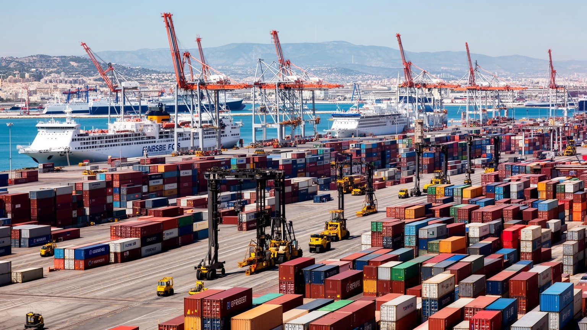
マルセイユの経済を支える港湾は、旧港の水面だけでは見えません。北側の港区からフォス湾に広がるマルセイユ・フォス港は、コンテナ、石油、化学品、穀物、フェリー、クルーズ、修理、倉庫、鉄道、道路を結び、フランスの地中海側の物流を担います。港は雇用を生む一方、労働争議、脱炭素、石油依存、港湾周辺の大気汚染、トラック交通、工業災害、海洋環境の課題も抱えます。船が入れば荷役、税関、警備、整備、燃料、清掃、書類処理、通訳、食品供給が動き、見えにくい仕事が市街地の生活とつながります。港湾の競争力はクレーンや水深だけでは決まりません。内陸鉄道との接続、労働者の安全、周辺住民の健康、エネルギー転換、サプライチェーンの危機に耐える力が問われます。マルセイユは観光の街である前に、世界の物資が通過する実務の都市です。港湾を読むことは、海のロマンではなく、燃料、冷蔵、保険、通関、労働組合、環境監視まで含めて都市の基盤を理解することです。クルーズ船の排ガスや岸壁電力、倉庫地の雇用、港と住宅地の境界も、地元の健康と都市計画に直結します。物流が止まれば、遠い市場だけでなく市内の店、病院、建設現場にも影響が出ます。港の選択です。地中海の玄関であることは、商品を速く動かす力と、その影響を地域で引き受ける責任を同時に持つことです。
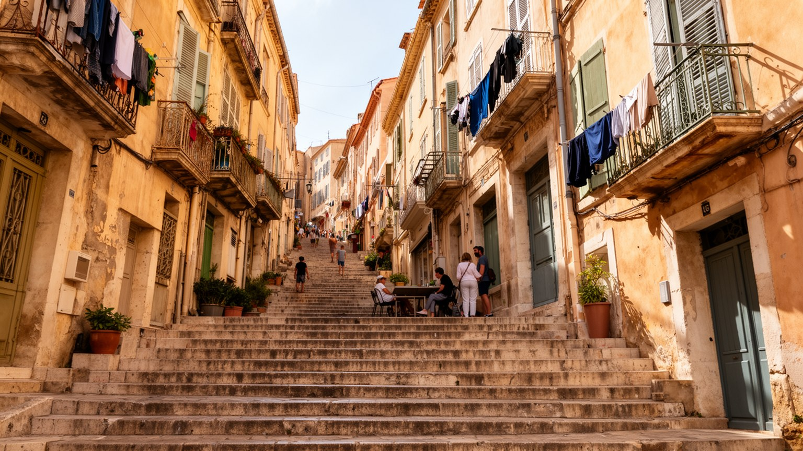
旧港の北に広がるパニエ地区は、マルセイユの古い都市核であり、坂道、階段、狭い路地、色のある窓、広場、工房、カフェが観光客を引き寄せます。だが、この地区の魅力は単なる「南仏らしさ」ではありません。港に近い労働者の住まい、移民の到着地、貧困、戦時中の破壊、再開発、文化施設の整備、短期宿泊の増加が重なってきました。古い建物を修復し、路地を歩きやすくし、店を増やすことは地区を明るくしますが、家賃上昇や住民の入れ替わりも進めます。壁画や工芸品店は創造的な街の顔を作る一方、生活の場が観光の背景へ変わる危うさもあります。パニエを読むには、写真に映える階段だけでなく、誰が住み続け、誰が退き、どの記憶が保存され、どの生活が見えにくくなるかを見る必要があります。旧市街の再生は、建物の美化だけでは成立しません。学校、福祉、公共住宅、近所の店、住民の広場利用が残ってこそ、地区は生きた都市になります。観光客の歩く速度と、買い物や子育てで坂を上り下りする住民の速度は違います。その差を見落とすと、旧市街は舞台装置になります。港に近い小さな広場で交わされる挨拶や、階段を使う高齢者の負担も地区の現実です。坂も記憶です。パニエはマルセイユが過去を商品にする場所であると同時に、港町の住民が過去と現在を交渉する場所でもあります。
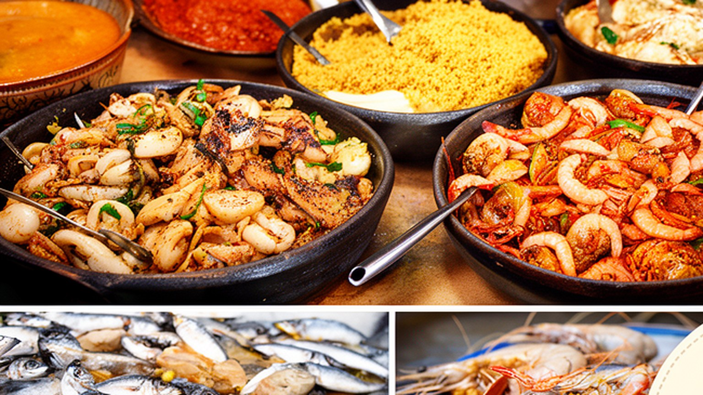
マルセイユの食は、ブイヤベースの名物性だけで語ると狭くなります。旧港の魚、地中海の野菜、オリーブ油、ニンニク、アニス酒、北アフリカのクスクス、コモロやレバノンの味、イタリア系の記憶、街角のピザ、パン屋、市場の果物が、港町の食卓を作ります。高級レストランの魚料理は観光の顔ですが、都市の食を支えるのは市場で仕入れる家庭、昼休みの労働者、移民商店、夜遅い軽食、学校帰りのパンでもあります。ノアイユの市場では、香辛料、乾物、肉、野菜、調理器具が並び、地中海とアフリカの生活圏が日常の買い物として現れます。同時に、食品価格、店の家賃、衛生管理、観光地化、漁業資源、海の汚染、低賃金の調理労働は無視できません。食文化は都市の多様性を楽しく見せますが、その背後には誰が早朝に仕入れ、誰が皿を洗い、誰が家族の味を商売に変えたのかという労働があります。港の魚が高くなれば名物料理の意味も変わり、安い惣菜や市場の量り売りは家計を守る知恵になります。厨房の言語、仕入れの信用、家族のレシピも、港町の社会関係を支えています。昼の定食も都市のリズムを映します。市場の声も。マルセイユを食から読むことは、港と移民と日常生活を一つに見ることです。海の幸と香辛料の組み合わせは、観光の記号ではなく、船と移動が作った生活の履歴なのです。
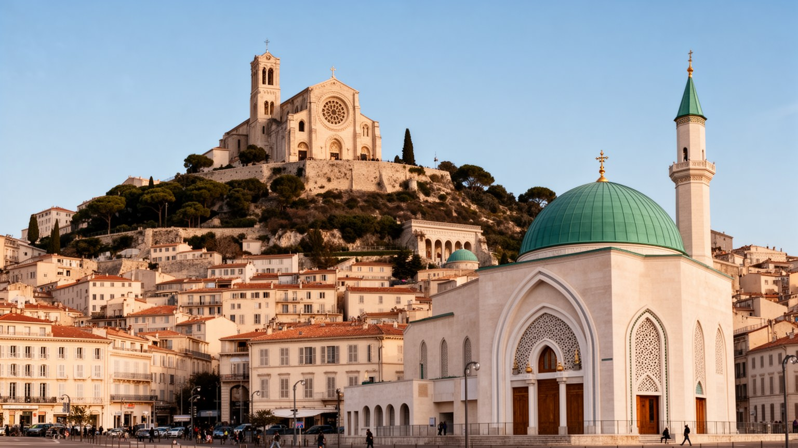
マルセイユの宗教生活は、ノートルダム・ド・ラ・ガルドの丘から街を見下ろすカトリックの象徴だけではありません。カトリック教会、イスラムの礼拝所、ユダヤ教の会堂、アルメニア教会、正教会、福音派の集会、世俗的な共和国の制度が、港町の移民史と結びついています。丘の聖堂は船乗りや家族の祈りを集め、模型船や奉納物が海で働く人の不安を伝えます。一方、日常の礼拝は市場の近く、団地の一角、商店街、家庭の食卓にもあります。宗教はしばしば対立や分断の言葉で語られますが、実際には葬儀、結婚、慈善、移民の相談、食の規範、子どもの教育、祭りを通じて暮らしを支える仕組みでもあります。もちろん、反ユダヤ主義、イスラム嫌悪、政教分離をめぐる緊張、礼拝空間の不足、政治的利用も存在します。マルセイユを読むには、宗教を観光名所やニュースの争点に閉じ込めず、港町で人びとが不安と帰属をどう扱ってきたかを見る必要があります。祝祭の日の行列、ラマダン明けの食卓、安息日の通り、追悼の祈りは、制度だけでは測れない都市の連帯を見せます。宗教施設は、移民家族が言葉や制度に迷う時の相談先にもなります。祈りは海で働く人の安全にも向かいます。丘の鐘も響きます。海を望む聖堂と街区の小さな祈りは、異なる共同体が同じ都市の空を分け合う現実を示しています。
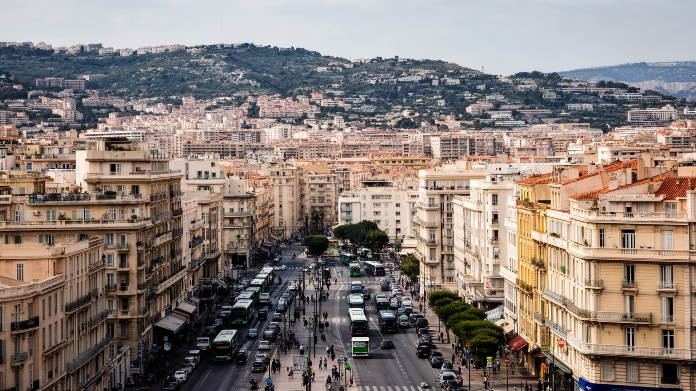
マルセイユの住宅問題は、海辺の明るい景色と切り離せません。中心部の老朽建築、パニエやノアイユの家賃上昇、北部地区の大規模団地、丘陵地の住宅、海岸沿いの高額な住まいが、短い距離で並びます。2018年にノアイユで起きた建物崩落は、古い住宅の危険、貧困、行政の監視、所有者責任を強く可視化しました。観光と再開発は街のイメージを変えますが、低所得世帯には立ち退き、長い通勤、狭い部屋、暑さ、カビ、エレベーター故障、治安不安として現れます。北部の団地はしばしば犯罪や失業の記号にされますが、そこには家族、学校、店、宗教施設、スポーツクラブ、地域活動の日常があります。住宅を読むには、建物の外観だけでなく、交通への接続、公共サービス、学校の質、仕事への距離、夏の熱、雨漏り、差別を一緒に見る必要があります。マルセイユの都市格差は、中心と周縁の距離だけでなく、同じ坂道の上と下にも表れます。住まいが安定しなければ、港で働く人も、観光を支える人も、学生も、移民家族も都市に参加しにくくなります。住宅政策は福祉の一部であり、災害対策、教育、雇用、交通を結ぶ都市政策でもあります。修繕の遅れや空き家の管理は、個人の問題ではなく公共の安全にも関わります。美しい地中海都市の成熟は、海を望む住宅だけでなく、見えにくい住まいの安全で測られます。
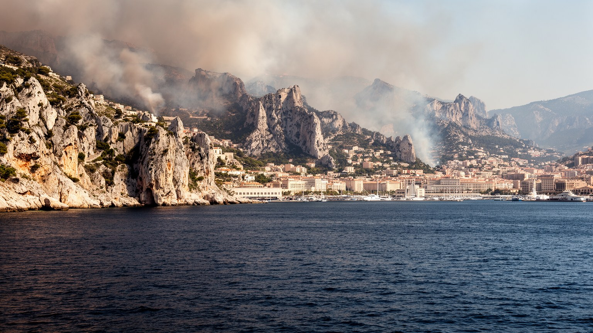
マルセイユの自然環境は、地中海の青さと石灰岩の白さで強い印象を残します。カランクの入り江、丘陵、島々、乾いた夏、強いミストラルは、都市の美しさと生活条件を同時に作ります。海辺の散歩や海水浴は住民にも観光客にも大切ですが、暑熱、山火事、水不足、海洋汚染、沿岸の混雑、自然保護とレジャーの衝突が年々重くなっています。カランク国立公園は、都市のすぐ近くにある貴重な自然として世界的な魅力を持つ一方、入域規制、ごみ、救助、交通、住民の負担を伴います。気候変動は遠い話ではなく、熱波の夜、エアコンのない住宅、屋外労働、港湾作業、学校、医療、観光の安全を左右します。ミストラルは空気を乾かし、街を冷ますこともありますが、火災リスクや体感の厳しさも運びます。マルセイユを読むには、海を背景として消費するだけでなく、海と丘が都市の限界を決め、住民の健康と余暇を支えることを見る必要があります。自然の近さは贅沢であると同時に、管理と公平性の課題です。海岸へ行くバスの本数、飲み水、日陰、救助体制、港湾の排出削減は、景観を守るだけでなく命を守る条件です。強い日差しの下で働く人や、混雑する浜辺を避ける住民の感覚も重要です。夏の夜も課題です。涼しい水辺や日陰に誰がアクセスできるかも、暑くなる地中海都市の社会問題になっています。
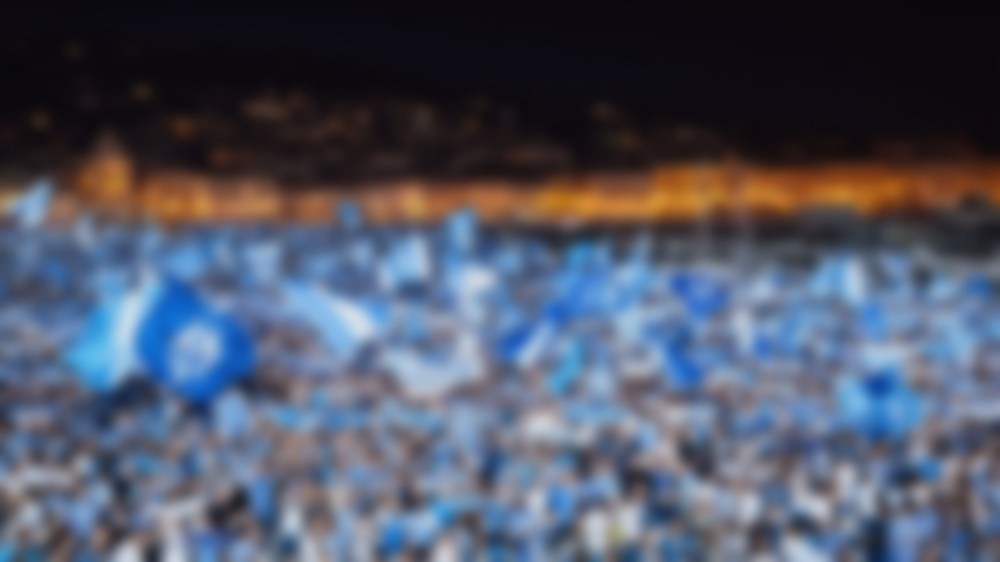
マルセイユの文化は、美術館や劇場だけでなく、港の言葉、ラップ、屋台、壁画、映画、サッカーの応援に強く表れます。オリンピック・マルセイユは単なるクラブではなく、都市の誇り、怒り、階層、移民の記憶、パリへの対抗心を引き受ける公共の感情装置です。試合の日にはスタジアム周辺、バー、住宅街、港の広場が一つの声になり、勝敗は翌日の会話と街の雰囲気を変えます。音楽では、地中海、マグレブ、アフリカ、フランス語ラップ、プロヴァンスの記憶が交差し、若者の政治感覚や生活の困難を表現してきました。文化は都市のブランドとして消費されますが、実際には失業、差別、警察との緊張、住宅、友情、家族、海への愛着を語る手段でもあります。マルセイユを読むには、公式の文化施設と同じ重さで、スタジアムの合唱、街角の音、映画に映る団地、落書き、地元メディアを見る必要があります。サッカーと音楽は都市を一枚岩にするわけではありません。むしろ対立を含んだまま、異なる背景の住民が同じ名前を叫ぶ瞬間を作ります。勝利の夜の騒音や敗北後の沈黙まで含めて、クラブは都市の体温を測る装置です。若い表現者にとって、街の荒さは制約であると同時に素材にもなります。港の声も作品へ変わります。声援も残ります。その熱量が、荒っぽくも親密な港町の公共性を支えています。
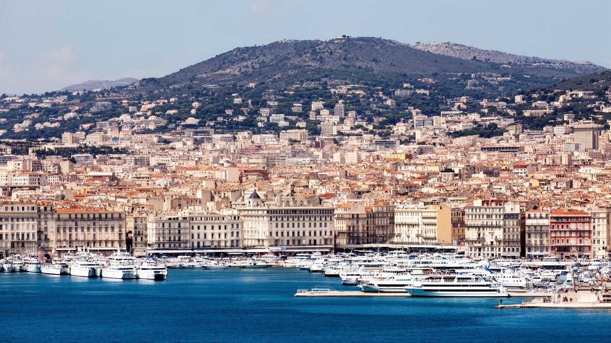
マルセイユを読むことは、フランスをパリ中心の地図から少し外し、地中海、移民、港湾、丘陵住宅、宗教、サッカー、気候の重なりから見直すことです。旧港は美しい入口ですが、都市の本体はそこだけにありません。北部の団地、フォスへ伸びる物流、ノアイユの市場、パニエの再生、丘の聖堂、カランクの自然、病院と大学、フェリー乗り場が、互いに矛盾しながら一つの都市を作っています。マルセイユは開かれた港町として称賛される一方、貧困、老朽住宅、治安、失業、差別、行政の弱さを抱えています。その弱さは都市の価値を下げるだけの欠点ではなく、共和国が誰を受け入れ、誰を周縁に置くのかを見せる鏡でもあります。観光客にとっては旧港、ノートルダム・ド・ラ・ガルド、カランク、ブイヤベースが入口になりますが、その動線の外にある労働と住まいを見た時、街の輪郭は深くなります。マルセイユの魅力は整った美しさではなく、海から来た人びとがぶつかり、祈り、働き、応援し、暮らしを続ける密度にあります。大都市の威信よりも、矛盾を抱えたまま人を受け入れてきた厚みがこの港町の核心です。港、丘、団地、海岸を一緒に歩くと、共和国の理念と都市生活の距離が具体的に見えます。地中海の光は、社会問題を隠す装飾ではなく、複雑な都市を見通すための強い明るさでもあります。